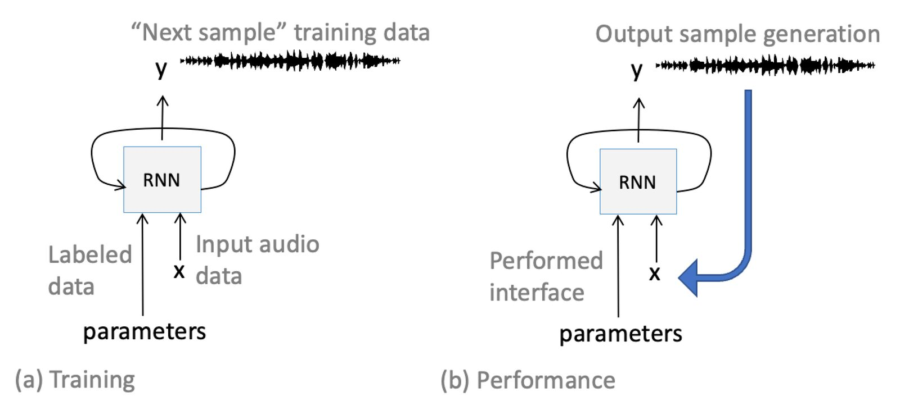
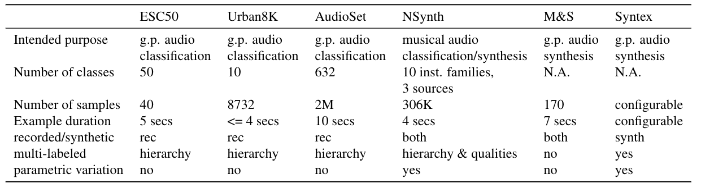
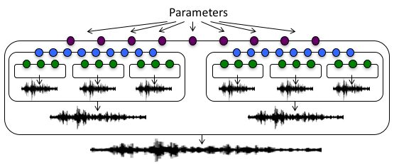
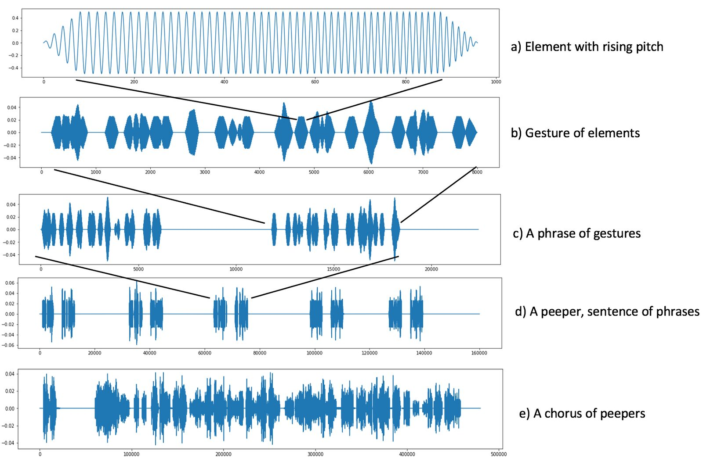
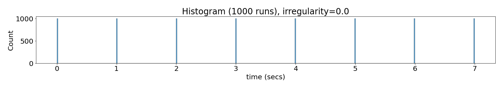
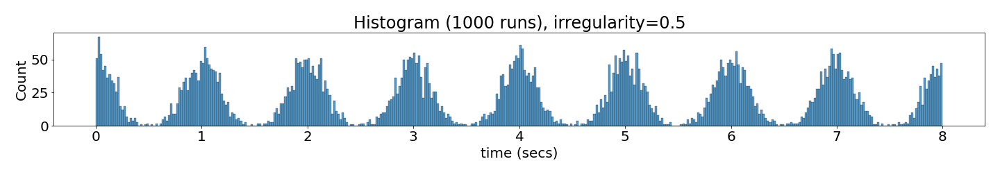
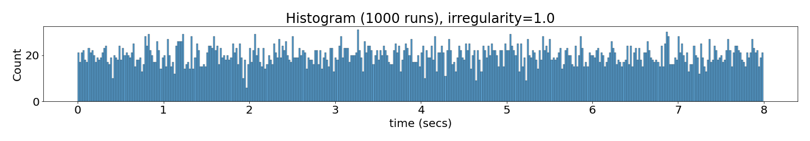

Syntex: parametric audio texture datasets for conditional training of instrumental interfaces.
Abstract
An emerging approach to building new musical instruments is based on training neural networks to generate audio conditioned upon parametric input. We use the term "generative models" rather than "musical instruments" for the trained networks because it reflects the statistical way the instruments are trained to "model" the association between parameters and the distribution of audio data, and because "musical" carries historical baggage as a reference to a restricted domain of sound. Generative models are musical instruments in that they produce a prescribed range of sound playable through the expressive manipulation of an interface. To learn the mapping from interface to audio, generative models require large amounts of parametrically labeled audio data.
This paper introduces the Synthetic Audio Textures (SynTex1) collection of data set generators. SynTex is a database of parameterized audio textures and a suite of tools for creating and labeling datasets designed for training and testing generative neural networks for parametrically conditioned sound synthesis. While there are many existing labeled speech and traditional musical instrument databases available for training generative models, most datasets of general (e.g. environmental) audio are oriented and labeled for the purpose of classification rather than expressive musical generation. SynTex is designed to provide an open shareable reference set of audio for creating generative sound models including their interfaces.
SynTex sound sets are synthetically generated. This facilitates dense and accurate labeling necessary for conditionally training generative networks conditionally dependent on input parameter values. SynTex has several characteristics designed to support a data-centric approach to developing, exploring, training, and testing generative models.
Author Keywords
Data sets, audio textures, conditional generation, interface design and training
CCS Concepts
•Applied computing → Sound and music computing;
Introduction
Recent years have witnessed a growing recognition in the importance of well-constructed and configurable data for training machine learning models. In this paper we introduce a collection of data sets specifically designed for the purpose of training and testing models for synthesizing audio textures under parametric interface control with novel features that support customization to meet such application needs.
The role of synthetic data processing is often used for data “augmentation” as the need for large data sets has grown. For audio, this often includes time shifting and compression, pitch shifting, frequency filtering, adding various kinds of noise [1] . This post-processing approach may not be as useful for some applications as control over the audio generation process itself. This is particularly true for designing interfaces for sound generating models. Synthesizing training data offers the possibility of expanding data sets in more diverse and meaningful ways than mere audio post processing.
Large relevant datasets are only part of what is necessary for training generative audio models. An audio model is defined only in part by the range of sounds it can produce. Just as important is the arrangement of the sounds in a parameter space which determine how the sounds can be navigated during performance. Some machine learning architectures such as Generative Adverserial Networks (GANs), can organize the sound space and the mapping from parameters to sounds without explicit supervision. However, if an instrument designer wishes to influence the mapping from parameter values to sound, that interface relationship must be made explicit in the data so that sound synthesis is conditioned on the value of the input parameters.
Because real-world audio data can be difficult and resource intensive to gather and label, purely synthetic data can play an important role in training and testing. The dense and accurate labeling of data with possibly well-hidden "latent factors" creates the possibility of conditional training on semantic or physical parameters impossible to derive from recorded data. Furthermore, with access to the generative algorithms, the data can be labeled with any information necessary and to any degree of detail. Synthetic datasets can also support the generation of infinite variations. This flexibility is at the heart of a data-centric approach to training models. However, most synthetic datasets currently available do not provide the dataset user with the inherent flexibility of the synthesis algorithms, instead, providing only the data they produce. In contrast, Syntex is a collection of customizable dataset generators.
As a step toward addressing all sound with playable musical instruments, SynTex models are designed for audio ‘textures’ that can be arbitrarily complex (babbling brook, crackling fire, crowd din) but are statistically stationary at some time scale given a particular parameterization.
This paper makes three contributions. 1) a database of audio textures filling a gap in the space of publicly available databases for training sound models, 2) a multi-faceted design supporting data manipulation as a method of model development, and 3) an open-source collection of texture synthesizers for generating datasets and a library for constructing them.
Background and related work
Training model interfaces
Networks can be trained to model data distributions unconditionally – that is, they can learn to generate data with the same distribution as the training set. One of the seminal generative audio models is WaveNet [2] which takes a window of data from the dataset and is trained to predict the next audio sample following the window of data. After training, the model can generate sequences of audio by taking the output sample generated at each time step and feeding it back as part of the window of input used to predict the next sample.
To make the model playable as an instrument via an interface, the input data is augmented to include parameters that correlate with the data, so that the model learns to predict audio based on (“conditioned” on) the augmented input. For training a model of a traditional musical instrument, the parameters could include the pitch and an instrument identifier. For training a wind sound instrument, a parameter could be the strength of the wind. After training, the parameters are imposed over time (for example, by a musical performer), so that the model produces the sound specified as it is played through the interface.
Different architectures incorporate parameter conditioning in different ways, but general idea is the same. Engel et al. [3] augmented the GANSynth input vector with a one-hot representation for pitch. Nistal [4] [5] added floating point values to a GANSynth like architecture representing descriptive audio qualities and Huzaifah and Wyse [6] used parameters such as event rate and frequency distribution for texture synthesis with a Recurrent Neural Network (RNN). Image 1 is a schematic showing how audio data is augmented with parameter labels. After learning the association, the instrument is performed by manipulating the interface parameters.


Conditionally training an RNN that generates one sample per time step. (a) During training, the audio and parameter labels come from the data set. (b) During performance, generated audio depends on dynamic parametric input from a performer.
To train conditionally, the parameters used for the interface must be sampled across their entire range and with a density sufficient to produce reliable output after training given parameter input, even at values that may not have been present in the data. Otherwise, the instrument may not produce the desired behavior. For example, GANSynth trained on pitches sampled at chromatic scale intervals, but interpolating those parameter values for control after training results in a kind of “mix” between two pitches rather than a single tone perceived at the interpolated pitch. Wyse [7] found that an RNN did better at interpolating between pitch, but that without any training data “between” instrument timbres (e.g. a clarinet and a trumpet), the RNN produces noise in response to interpolated values of the instrument parameter.
Audio datasets with sufficiently dense parameter values may be impossible to gather from recorded audio (e.g. and instrument between a trumpet and a clarinet) and even when audio is available, labeling recorded audio is time consuming and difficult. This motivates the use of synthetic data with parameter labels that can be sampled at arbitrary densities, and that do not have to be estimated by machines or humans, but come from the design of the synthetic algorithms.
Texture Datasets
Analogous to visual textures, audio textures are used in media and creative production [8] [9] [10] [11] as well as for studying human perception. Despite being studied for decades, no common reference or benchmarking datasets have emerged for generative audio texture modeling as they have for audio classification or for speech and music generation.
Saint-Arnaud and Popat [12] did seminal work describing textures as sounds with local structure, but stationary over a long enough "attention" window. They used a two-tier model with "atoms" at one level, and their distributions over time at the second tier, an approach developed further for our hierarchical texture synthesizer described below. Their focus was on analysis of real-world signal statistics and resynthesis.
In the process of studying the human perception of audio texture, McDermott and Simoncelli [13] and later, McWalter and McDermott [14], generated textures based on statistics derived from real-world sounds processed by an auditory model. Their data set of textures2 became a common reference point for later work by other researchers and consisted of renderings of wind, radio static, rain, bees, river, water in sink, bubbling water, insects, applause, gargling, frogs, frying eggs, fire, cocktail party babble, shaking coins, tapping rhythms, wind chimes, scraping, footsteps on gravel, church bells, and many more. The recorded data were used to create novel sounds with the same statistics for the purpose of studying perception, but their set of sounds come with little metadata and no systematic parametric variation. Nonetheless, their data have become the closest thing to a reference set currently available for training audio texture synthesis models and have been used for this purpose by Antognini et al. [15], Bruna et al. [16], and Caracalla et al. [17] among others.
Developments in deep learning over the last decade have given rise to new approaches to audio synthesis modeling. The style transfer approach is based on Gatys et al.'s [18] model that computes Gram matrices for various layers in a convolutional neural network (CNN). The time-independence of the Gram matrix representation can be interpreted as a representation of texture. Ulyanov and Lebedev [19] explored musical audio texture transfer, and the sound examples on their blog have also become a fairly common reference dataset (e.g. [20], [15], [21], [22]), though their sounds also offer no parametric variation.
Both the Gram matrix representation and the set of statistics used by McDermott and colleagues described above are used in a similar way to generate novel audio textures that match characteristics of a target texture. They both start with a noise signal, and iteratively transform it until it produces a match of the latent (Gram matrix or statistical) representation of the target. Neither network needs to be trained nor involves labeled parametric variations of sounds, Both of these latent representations can be manually manipulated to control synthesis to some extent, but the architectures are not suited for real-time instrument-like performance.
GANSynth [3] is state-of-the-art for modeling pitched musical instruments, and musical notes at steady state can be considered a simple kind of audio texture. This generative model was trained using the NSynth dataset which has since become the standard reference set for musical instrument modeling with interface control largely because of the critically important dense parametric labeling. The NSynth dataset website include a detailed description of the set that contains over 300K musical notes from over 1K instruments systematically sampled and labeled across the chromatic pitch scales and at 5 different "velocities" (indicative of amplitude). Instruments are labeled with their families (e.g. wind, brass) and include both acoustic recordings and synthetic instruments.
There are also existing environmental and audio "scene" datasets, many of which consist of sounds that are textural (as described above). However, most environmental and audio scenes are designed and labeled for classification, target or anomalous event detection, localization, and sometimes stream analysis and segregation. Non-speech/non-music audio databases uses are typified by IEEE AASP Challenge on Detection and Classification of Acoustic Scenes and Events (DCASE3). Other environmental audio datasets include AudioSet [23] consisting of some 5K hours of weakly labeled youtube data and an ontology of over 600 classes for labeling, the ESC-50 set [24] of 2000 sounds from freesound.org [25] labeled using 50 classes, the UrbanSound8K [26], and the FSD50K [27] with 50K clips drawn from freesound.org and labeled with 200 classes from the AudioSet Ontology. While comprised of sounds far wider in scope than music and speech, these datasets are not designed for training synthesis models that would require dense parametric labeling for conditionally training interface controls.
Some densely-label parametric synthetic datasets do exist for training "inverse" models to estimate parameters for a specific synthesizer given a sound [28] [29] rather than to learn generative synthesis models.
None of these generative modeling efforts produced a publicly available dataset for the purpose of training and testing conditioned generative audio textures that other researchers use as a standard reference for developing and comparing models. A comparison of a some of the existing datasets for general purpose audio or for training generative models is given in the table below.


A comparison of several audio dataset characteristics. (Abbreviations: g.p. - general purpose; M&S - McDermott and Simoncelli)
Wyse and Huzaifah [30] published a precursor to SynTex with a set of parameterized natural and synthetic audio textures, but the database was small, generated by diverse software systems, and not easily configurable. These shortcomings led directly to the design of SynTex.
Using the SynTex collection
In this section, we discuss how the user interacts with the SynTex collection. These software design aspects are not novel considered in isolation, but they are focused specifically on the needs of training and testing instrument models, and distinguish SynTex from other audio training data sets.
The SynTex collection consists entirely of models of audio textures and the expanding collection can be accessed online.4 Each dataset in the collection is listed with a description of the sounds, a list of the parameters used to produce the dataset, their ranges and how they map to audio features. A small subset of dataset sound samples can also be auditioned.
Models are downloaded as code which generate dataset locally with a single shell command. A json5 configuration file is used to generate the default audio dataset, but it can be edited to customize the dataset to suit usage needs.
Customizing dataset generation
One of the benefits to synthetic data is the possibility of customization. On the other hand, in order to serve the modeling community as a reference data source, it needs to be possible to regenerate datasets exactly (despite the pervasive randomness that characterizes textures). This balance is achieved by the careful seeding of all random number generators in SynTex models, and by exposing a seed in the configuration file. There is a default seed for generating the consistent 'reference' dataset, but by choosing a different value for the seed, different variations of the "same" textures can be generated (given the same parameter regimen for generating the dataset).
Other parameters that can be edited such as sample rate, do not change the "content" of the audio textures in the generated dataset, but are important parameters for model training. Modelers may want training parameters in [-1,1], or [0,1], or in the natural units used by the synthesizer interface. These "user" parameter ranges are mapped linearly to whatever the various ranges for the chosen synthesizer controls may be.
Parameters for customizing the content of data sets
Deep learning models are notorious for requiring lots of data to train reliably. Most SynTex models, like real-world textures, generate sound indefinitely without repeating. The durations of the individual files in datasets are configurable for generating novel data lasting from seconds to hours. Parameters can also be grid-sampled as densely as necessary.
The grid-sampling of parameters used for generating the default data set generally covers a fairly small range of the sounds a SynTex synthesizer is capable of generating. The configuration files have a section listing the parameters that a model exposes, but that do not change in the generation of a particular data set. Any of these parameters can be moved to the dynamic parameter section and given range and sampling densities so that they will be part of the grid-sampling used to generate a data set. The models are not designed for “realism” as much as for providing a wide variety of sonic characteristics that can be used to test the models they are used to train. There are parameter settings that stray very far from any recognizable relationship to the names given to the models (e.g. ‘mosquito’ or ‘applause’), and these parameter regimes can still useful for testing or training models.
The DSSynth models and library
The code for synthesizers themselves and the necessary libraries are open source and part of the downloaded package. It would be meaningless to describe the details of the different algorithm for each individual sound set. However, the texture-oriented architecture and the “DSSynth” API are the common to all sounds and can be extended to create new labeled data sets.
The defining architectural component is the base synth class, DSSoundModel. It is designed for hierarchical nested construction (Image 3) supporting event generation processes at different time scales appropriate for training and testing texture generators. Units at or closer to the bottom of the hierarchical structure generate audio themselves (for example, the "atoms" or "grains" of the texture).


The hierarchical organization of a typical SynTex dataset generator using the base sound class at different levels. Each nested block is an instance of the base DSSynth class exposing parameters (the colored circles) and a ‘generate’ method.
An example serves to illustrate suitability of the hierarchical architecture for texture synthesis and can be seen in Image 4. This audio texture is loosely imitative of a "night chorus" of peepers, small tree frogs that frequently congregate in temperate climate wetlands. The example can be auditioned on line6.


Hierarchical construction of a chorus of peepers. Each level is generated by a DSSynth that has parameters appropriate for the distributions defining the event pattern or audio at that level. (a) Generates the elemental sound - a sine tone rising in frequency with a center frequency and range, (b) generates a randomized sequence of events with slowly rising center frequencies. (c) creates the "double gesture" pattern characteristic of some kinds of peepers. (d) creates the complete pattern for one peeper, and the top level creates an ensemble, each varying in rate, amplitude, frequency coverage, and regularity.
Summary and future work
We introduced a new publicly available collection of datasets, SynTex, designed for the kind of data wrangling required for training and testing generative audio texture models and their interfaces. Data-driven instrument design requires densely sampled and accurately labelled parameters for training synthesisers conditioned on interface parameter values.
The workflow and datasets are synthetic and embody features for documentation and usage some of which are novel, and others conformant with best practices in dataset development and presentation. There is a reference version of each dataset generated by default, but datasets can be easily customized in support of data-centric techniques for training models just by editing a configuration file. Finally, we developed an open-source library of code that consists of synthesizers, a library for further development of synthesizers, along with the software module for creating datasets from configurations.
Future directions include the expansion of the number and types of datasets as well as the metadata file formats. Finally, we are exploring ways in which dataset generators might be useful in creating a set of evaluation metrics for audio texture generators where the common expectation of infinite novelty and lack of ground truth present unique challenges.
Acknowledgments
This research has been supported by a Singapore MOE Tier 2 grant, “Learning Generative Recurrent Neural Networks,” and by an NVIDIA Corporation Academic Programs GPU grant.
Ethics Statement
This paper comes from a research group that benefits from diversity in age, race, nationality, and gender, and that maintains ethical standards aligned with those of NIME7. The synthetic audio and the SynTex database code itself are all freely accessible and licensed as open source. No animate subjects were used in any experiments for this work. All funding sources have been acknowledged and we are aware of no potential conflicts of interests.
Appendix: Data set construction
A description of how some of the audio textures in the Syntex collection8 are constructed is provided here, although we consider the actual synthesis algorithms, different for each sound set, to be less important than the architecture for generating densely grid-sampled parametric variation of audio textures as labeled data for training instruments. The dataset names are mnemonic and suggestive of the sound and types of parameters the algorithms expose (and are not meant to make any claims about the "realism" of sounds named).
Most sounds expose more parameters than the few that are sampled to create the default dataset. The other parameters are fixed to generate the default set, but available in the dataset config file for grid sampling as well to create other sets. Most of these sound textures involve stochastic generation of some kind and can thus generate as much novel audio as an application requires.
The source code is for each set is downloaded in order to create the audio files, and is available, organized, and documented for exploration.
DS_BasicFM_1.0
This sound implements a basic frequency modulation equation. The parameters are set so that the modulation of the carrier frequency is heard as vibrato over most of their ranges. There is no stochastic variation.
Parameters:
cf_exp (controls center frequency): , in
mf (modulation frequency): in
mI (modulation index): in
DS_Wind_1.0
Wind is constructed starting with a normally distributed white noise source followed by a 5th-order low-pass filter with a cutoff frequency of 400 Hz. This is followed by a band pass filter with time-varying center frequency (“cf") and gain, and a constant bandwidth value.
The variation (cf and gain of the bandpass filter) is determined by a 1-dimensional simplex noise signal that is bounded (before scaling) in and band-limited (we use the OpenSimplex9 python library).
The simplex noise generator takes a frequency argument linearly proportional to the “gustiness" parameter for the sound. A “howliness" parameter is proportional to the bandpass filter Q-factor inverse of the band width). A “strength" parameter controls the average frequency around which the center frequency of the band pass filter fluctuates.
Parameters:
strength: (controlling cf of bandpass filter): ,, in ,
gustiness: (controls frequency argument to simplex noise): , in
howliness (controlling bandwidth Q of the bandpass filter): , in
DS_WindChimes_1.0
Five different “chimes" ring at average rates that are a function of wind strength (wind also plays in the background for this sound). Each chime is constructed from 5 exponentially decaying sinusoidal signals with frequency, amplitude, and decay rates based on the empirical data reported in [31]. A “chimeSize" parameter for this sound scales all the chime frequencies.
A simplex noise signal is computed for each chime based on the wind “strength" as described for DS_Wind_1.0 above. Zero-crossings in the simplex wave cause the corresponding chime to ring at an amplitude proportional to the derivative of the simplex signal at the zero crossing.
Parameters:
strength: (see DS_Wind_1.0 above)
chimeSize (inversely controls for chime frequencies): =4∗chimeSize
in
DS_Tapping1.2_1.0
This sound is based on the “Tapping 1-2" on sound from the McDermott and Simoncelli [32] paper on texture perception. The original sound consists of 10 regularly spaced pairs of taps over seven seconds with the second tap coming one quarter of the way through the repeating cycle period. DS_Tapping1.2_1.0 resynthesises this sound with parameters for the cycle period and for the phase in the cycle of the second tap.
Parameters:
rate_exp: , in
phase_rel (phase of second tap in cycle): in
DS_Bees_3.0
Roughly imitative of a group of bees buzzing and moving around in a small space. Each bee buzz is created with an asymmetric triangle wave with an average center frequency in the vicinity of 200 Hz. The buzz source is followed by some formant-like filtering. Bees move toward and away from the listener based on a 1-dimensional simplex noise signal controlled by a frequency parameter for the simplex noise generator, and a maximum and minimum distance. This motion creates some variation in the buzzing frequency and amplitude due to the Doppler effect and amplitude roll-off with squared distance. These parameters are all fixed (the simplex frequency parameter is 2 Hz, the minimum and maximum distances are 2 and 10 meters).
There are two parameters systematically varied for the experiments in this paper. One is the center frequency of a Gaussian distribution from which each bee’s average center frequency is drawn.
Buzzes also have a “micro” variation in frequency following a 1-D simplex noise signal parameterized with a frequency argument of 14 Hz. The “busybodyFreqFactor” controls the excursion of these micro variations by multiplying the [-1,1] simplex noise signal to get frequency variation in octaves.
Parameters:
cf_exp (exponent for the mean of a Gaussian distribution from which center frequencies of bee buzzes are drawn): , in , the Gaussian has a fixed standard deviation of
busybodyFreqFactor (excursion in octaves): in
DS_Chirp_1.0
Chirps are frequency sweeps of a pitched tone with 3 harmonics (frequencies at [0, 1, and 2] times the fundamental). Chirps have a center frequency (expressed in octaves relative to 400 Hz, see below) drawn from a Gaussian distribution, a duration, and move linearly in octaves. Chirps occur with an average number of events per second (eps), and can be spaced at regular intervals in time, or irregularly according to a parameter (“irreg_exp") (See Image 5)
Parameters:
cf_exp: mean frequency of the Gaussian from which the center frequency of chirps is drawn , in [-2, 2]
irreg_exp (controls standard deviation of Gaussian around regularly spaced events normalized by events per second (eps)): )/eps, in (see Figure below)






Histograms of event placement in time for irregularity settings 0. .5, and 1.0
DS_FBNoiseDelay_1.0
A uniformly distributed (“white") noise signal is comb filtered using feed back delay:
The greater the value of α, the more pitched and less noisy the signal sounds.
Parameters:
cf_exp (determines ): ), in [-1, 3], sr is sample rate. Resulting pitch in Hz.
pitchedness (determines ): , in determines the bandwidth of the noise peaks at the harmonics of the nominal pitch frequency.
DS_Pops_3.0
Pops are generated by a brief noise burst (3 uniformly distributed random noise samples in [-1,1]) followed by a narrow bandpass filter with a center frequency drawn from a narrow Gaussian distribution.
Parameters:
cf: mean frequency of a Gaussian from which the center frequency of the bandpass filter is drawn, in [440, 880] Hz, and the standard deviation is 1 in units of musical semitones.
irreg_exp (standard deviation of Gaussian around regularly spaced events normalized by events per second (eps)): )/eps, in (see Image 5)
rate_exp: , in
Footnotes
Citations
- ↩Manocha, P., Jin, Z., Zhang, R., & Finkelstein, A. (2021). CDPAM: Contrastive learning for perceptual audio similarity. ICASSP 2021-2021 IEEE International Conference on Acoustics, Speech and Signal Processing (ICASSP), 196–200.
- ↩Oord, A. van den, Dieleman, S., Zen, H., Simonyan, K., Vinyals, O., Graves, A., Kalchbrenner, N., Senior, A., & Kavukcuoglu, K. (2016). Wavenet: A generative model for raw audio. arXiv Preprint arXiv:1609.03499.
- ↩Engel, J., Agrawal, K. K., Chen, S., Gulrajani, I., Donahue, C., & Roberts, A. (2019). Gansynth: Adversarial neural audio synthesis. arXiv Preprint arXiv:1902.08710.
- ↩Nistal, J., Lattner, S., & Richard, G. (2020). DrumGAN: Synthesis of drum sounds with timbral feature conditioning using Generative Adversarial Networks. arXiv Preprint arXiv:2008.12073.
- ↩Nistal, J., Lattner, S., & Richard, G. (2021). DarkGAN: Exploiting Knowledge Distillation for Comprehensible Audio Synthesis with GANs. arXiv Preprint arXiv:2108.01216.
- ↩Huzaifah, M., & Wyse, L. (2020). MTCRNN: A multi-scale rnn for directed audio texture synthesis. arXiv Preprint arXiv:2011.12596.
- ↩Wyse, L. (2018). Real-valued parametric conditioning of an RNN for interactive sound synthesis. arXiv Preprint arXiv:1805.10808.
- ↩Xenakis, I. (1992). Formalized music: thought and mathematics in composition. Pendragon Press.
- ↩Roads, C. (1988). Introduction to granular synthesis. Computer Music Journal, 12(2), 11–13.
- ↩Roads, C. (2004). Microsound. MIT press.
- ↩Truax, B. (1988). Real-time granular synthesis with a digital signal processor. Computer Music Journal, 12(2), 14–26.
- ↩Saint-Arnaud, N., & Popat, K. (1995). Analysis and synthesis of sound textures. In Readings in Computational Auditory Scene Analysis.
- ↩McDermott, J. H., & Simoncelli, E. P. (2011). Sound texture perception via statistics of the auditory periphery: evidence from sound synthesis. Neuron, 71(5), 926–940.
- ↩McWalter, R., & McDermott, J. H. (2018). Adaptive and selective time averaging of auditory scenes. Current Biology, 28(9), 1405–1418.
- ↩Antognini, J., Hoffman, M., & Weiss, R. J. (2018). Synthesizing diverse, high-quality audio textures. arXiv Preprint arXiv:1806.08002.
- ↩Bruna, J., & Mallat, S. (2013). Audio texture synthesis with scattering moments. arXiv Preprint arXiv:1311.0407.
- ↩Caracalla, H., & Roebel, A. (2020). Sound texture synthesis using RI spectrograms. ICASSP 2020-2020 IEEE International Conference on Acoustics, Speech and Signal Processing (ICASSP), 416–420.
- ↩Gatys, L. A., Ecker, A. S., & Bethge, M. (2015). Texture synthesis using convolutional neural networks. arXiv Preprint arXiv:1505.07376.
- ↩Ulyanov, D., & Lebedev, V. (2016). Audio texture synthesis and style transfer. %20https://dmitryulyanov.github.io/%20audio-texture-synthesis-and-style-transfer/
- ↩Wyse, L. (2017). Audio Spectrogram Representations for Processing with Convolutional Neural Networks. Proceedings of the First International Conference on Deep Learning and Music, 37–41.
- ↩Antognini, J., Hoffman, M., & Weiss, R. J. (2018). Synthesizing diverse, high-quality audio textures. arXiv Preprint arXiv:1806.08002.
- ↩Grinstein, E., Duong, N. Q., Ozerov, A., & Pérez, P. (2018). Audio style transfer. 2018 IEEE International Conference on Acoustics, Speech and Signal Processing (ICASSP), 586–590.
- ↩bin Md Shahrin, M. H., & Wyse, L. (2020). Applying visual domain style transfer and texture synthesis techniques to audio: insights and challenges. Neural Computing and Applications, 32(4), 1051–1065.
- ↩Engel, J., Agrawal, K. K., Chen, S., Gulrajani, I., Donahue, C., & Roberts, A. (2019). Gansynth: Adversarial neural audio synthesis. arXiv Preprint arXiv:1902.08710.
- ↩Gemmeke, J. F., Ellis, D. P., Freedman, D., Jansen, A., Lawrence, W., Moore, R. C., Plakal, M., & Ritter, M. (2017). Audio set: An ontology and human-labeled dataset for audio events. 2017 IEEE International Conference on Acoustics, Speech and Signal Processing (ICASSP), 776–780.
- ↩Piczak, K. J. (2015). ESC: Dataset for environmental sound classification. Proceedings of the 23rd ACM International Conference on Multimedia, 1015–1018.
- ↩Fonseca, E., Pons Puig, J., Favory, X., Font Corbera, F., Bogdanov, D., Ferraro, A., Oramas, S., Porter, A., & Serra, X. (2017). Freesound datasets: a platform for the creation of open audio datasets. Hu X, Cunningham SJ, Turnbull D, Duan Z, Editors. Proceedings of the 18th ISMIR Conference; 2017 Oct 23-27; Suzhou, China.[Canada]: International Society for Music Information Retrieval; 2017. p. 486-93.
- ↩Salamon, J., Jacoby, C., & Bello, J. P. (2014). A dataset and taxonomy for urban sound research. Proceedings of the 22nd ACM International Conference on Multimedia, 1041–1044.
- ↩Fonseca, E., Favory, X., Pons, J., Font, F., & Serra, X. (2020). FSD50k: an open dataset of human-labeled sound events. arXiv Preprint arXiv:2010.00475.
- ↩Esling, P., Masuda, N., Bardet, A., Despres, R., & others. (2019). Universal audio synthesizer control with normalizing flows. arXiv Preprint arXiv:1907.00971.
- ↩Le Vaillant, G., Dutoit, T., & Dekeyser, S. (2021). Improving synthesizer programming from variational autoencoders latent space. Proceedings of the 23rd International Conference on Digital Audio Effects (DAFx20in21).
- ↩Wyse, L., & Huzaifah, M. (2020). Deep learning models for generating audio textures. Proceedings of the 2020 Joint Conference on Music Creativity, Stockholm, Sweden.
- ↩Lukkari, T., & Valimaki, V. (2004). Modal synthesis of wind chime sounds with stochastic event triggering. Proceedings of the 6th Nordic Signal Processing Symposium, 2004. NORSIG 2004., 212–215.
- ↩McDermott, J. H., & Simoncelli, E. P. (2011). Sound texture perception via statistics of the auditory periphery: evidence from sound synthesis. Neuron, 71(5), 926–940.